EQPHP简介
欢迎使用 EQPHP
EQPHP是什么？
EQPHP,一款超简单易用的、安全的、高效的php开源框架。它是一款基于面向对象的TPS-MVC全分离式框架，由工具类、组件类、业务逻辑层—数据模型层、视图层、控制层组成，重写常用函数、类库，整合Smarty的组件类，收集升级Web项目常用类，可根据功能需求自由扩展。本框架以类为单元，动静结合（静态类、设计模式型的组合群），功能强大（文件目录操作、异常日志追溯、缓存静态化、请求响应数据接收处理、DB操作等关键性技术）。结构简洁（单一入口、自动加载）、体积极小（158KB），部署灵活，可任意调整，适合几乎所有Web项目开发。
EQPHP在同行业、同领域有什么独到之处？
1、免费开源：遵循Apache2开源协议发布，意味着你不但可以免费使用，甚至允许把你基于EQPHP开发的应用开源或商业产品发布、销售。
2、小巧易用，无需学习：本框架除工具类外仅剩类文件自动加载和MVC层次结构。
3、文档齐全，资源广泛，社区活跃，你可以随时活的帮助和疑难解答，也可以分享自己的心得与经验。
在哪儿可以获取EQPHP？
官方下载地址：
zip 压缩包：http://www.eqphp.com/download/framework_v1.0.zip
tar 压缩包：http://www.eqphp.com/download/framework_v1.0.tar.gz
GitHub下载地址：
https://github.com/eqphp/framework
其它下载地址：
开源中国：http://www.eq95.com/download/EQPHP_120508.zip
CSDN：http://download.csdn.net/detail/u012655415/6482883
安装与配置
运行环境要求：
Linux(Lamp)、Windows-IIS或Windows(Wamp)平台，PHP5.3以上版本，apache2.2
Wamp平台安装方法：
wamp环境下非常简单，直接解压缩包，将解压后的www目录里的内容复制到web的www目录（或htdocs）下即可完成安装。
Lamp平台安装方法：
将下载好的tar包解压到既定目录（如:/var/www/，命令：tar -xvf 下载包 /var/www）即可完成安装部署，直接访问URL：http://localhost/即可看到如下欢迎画面：
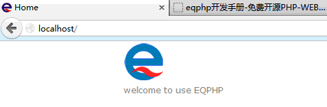
OK，大功告成！
命名规范与相关约束
说实话，你是不是很不情愿被约束，被习惯呢？或者说你的习惯已经很好了，自成风格，自有规范，其它的统统是异类……
哈哈，不必担心，EQPHP只有一个约束须遵守(^-^ only one ！)：
每个类名需前缀所在目录的小写首字母加下划线，且与文件名一致，如：a_index、m_user、s_command等等。
推荐一套风格习俗：
a、摈弃大写，全局常量前缀：dc_ (define constants的首字母)，如dc_root；
b、采用下划线式驼峰命名变量、函数名、类名、目录名，如$user_id、get_user_info()、p_page、news；
c、看到前两条很奇葩的风格是不是你已经猜到书者的意图（摈弃大写）了？是的，那么就用封装来kill掉遇到的大写，如$_SESSION可用session()方法，
$_POST可用post(),官方没有这些作为内置函数就是留给我们使用的，你猜的没错；
d、凡事不过三，开发也一样，嵌套（继承{接口、抽象、实现}、循环、条件判断、缩进(最好换行)……）最多三层，分方法处理多层嵌套，牺牲微末性能来提高代码可读性；
e、多考虑设计原则，少套用设计模式，以免过度开发；
f、一个模块只干该干的是，一个类只做该做的事、一个方法只实现最少的功能……
案例：留言本
说这么多，爱学的你是不是已经急了、烦了？，它到底能做啥？好使不？好吧，不说了，接下来我们来开发一个留言本。
step 1、先看需求规格：
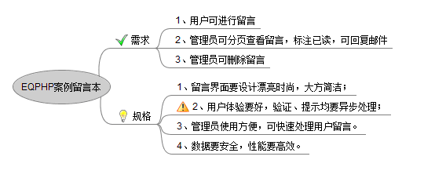
step 2、设计效果图如下：
留言发表页面：
管理员登陆页面：
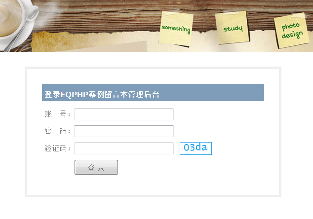
留言管理页面：

step 3、切图、出静态页面：
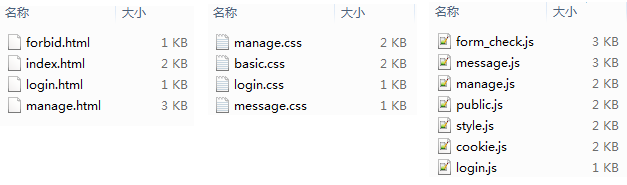
step 4、设计数据库：
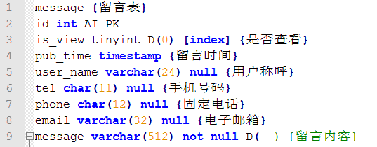
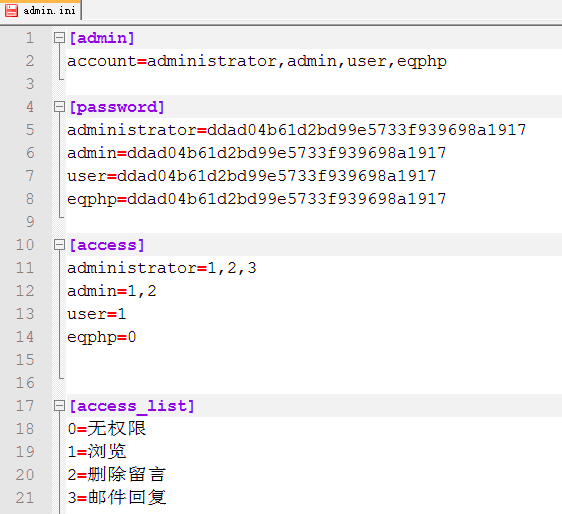
step 5、写程序，处理数据业务逻辑：
5-1、配置数据库信息，打开config目录下的db.ini文件，配置如下：
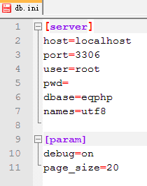
5-2、开发留言发表功能（发表留言）。
在action目录下创建一个名为a_message.php的php脚本文件，打开它写入如下代码:
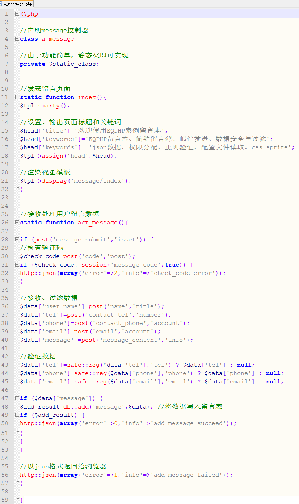
5-3、开发留言查看功能（分页查看、筛选未读留言）。
在action目录下创建一个名为a_manage.php的php脚本文件，打开它写入如下代码:

5-4、开发留言管理功能（标注已读、删除）。
在action目录下创建一个名为a_act_manage.php的php脚本文件.
5-5、开发权限功能（登录、查看、标注、删除）。
在action目录下创建名为a_access.php、a_login.php的脚本文件.
技术团队与社区
官方微信
官方微博
新浪微博 腾讯微博
QQ技术群
EQPHP官方群：464221529、84683642
EQPH PHP群：258122391
EQPHP前端群：2448688735
EQPHP组件扩展群：2394909507
社区论坛：
Q & A：http://ask.eqphp.com/
BBS：http://bbs.eqphp.com/
目录结构与说明
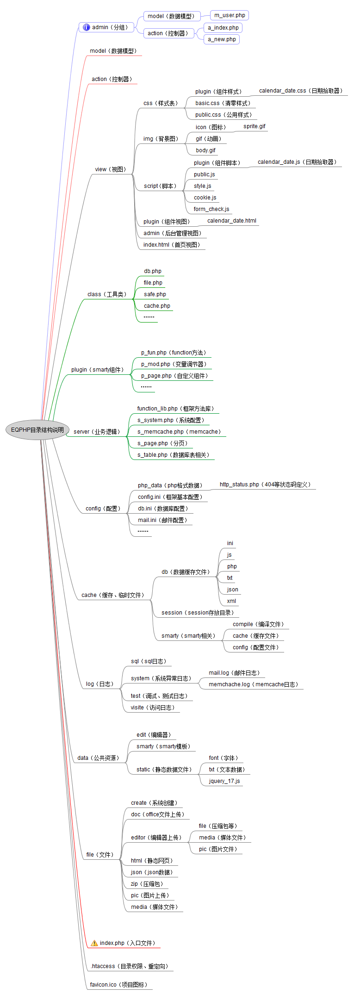
备注：
1、分组可有有多个，每个都有控制器和数据模型两个目录；
2、除一级目录外，其它的可自定义，详细参考config文件夹下的dir.ini文件；
3、日志(log)、文件(file)、数据(data)、视图(view)结构可以任意整合，此结构只做参考；
调用流程与执行原理
调用流程：
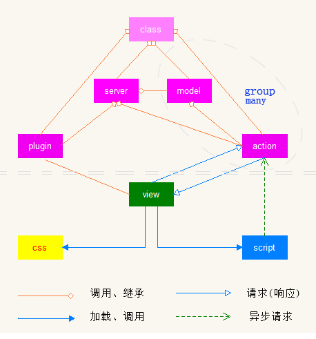
执行原理：
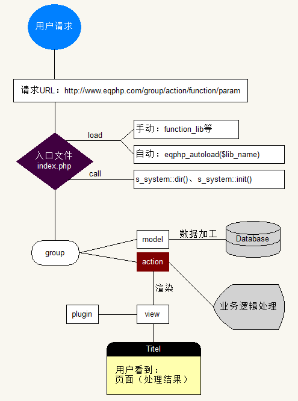
备注：
1、对于简单项目，可以不用分组；
2、多层级、多划分的目的是为了业务逻辑处理、数据加工更加简洁明了；
3、本样图只是常规应用的部署架构，对于具体项目可以自由修改。
控制器（action）
作用：
1、接收用户请求、加工处理请求条件(如：post、get(或url片段)、协议等)；
2、根据请求（包括异步）参数，调用模型（model）所加工的数据或业务逻辑（server）处理结果，并赋值视图，加载渲染视图返回处理结果给用户；
3、处理控制器内部业务逻辑，完善并使得控制器高度自治。
URL解析：
传统url：{协议}://{二级域名}.{域名}/[分组/]{php脚本}?{get参数}。如：http://www.eqphp.com/news.php?action=del&id=8
分段路由(pathinfo)：{协议}://{二级域名或分组名}.{域名}/[分组/]{控制器}/{方法}/{参数}。如：http://www.eqphp.com/admin/news/del/8
混合路由：{协议}://{二级域名}.{域名}/[分组/]{控制器}/{方法}/?{url片段}。如：http://www.eqphp.com/admin/news/del/?id=8&form=admin#lay_3
说明：
1、本框架追求简洁，提倡采用流行的分段路由（需要支持伪静态），但不废除传统路由和混合路由；
2、每个控制器须有默认方法（即index），请求的url的方法不存在时自动跳转到index方法。当然也可自定义魔术方法__call()。
3、每个控制器目录下可有a_index.php控制器作为（该分组下的）默认控制器，当url中没有正确控制器时执行该默认控制器 案例：controller。
4、每个对外控制器方法可有一个(静态)或多个（非静态）形参，形参的值为：explode('/',dc_request)的结果。
例外：
1、对于静态控制器（不需要实例化），需要声明私有属性$static_class，
且对外访问的每个方法必须加static修饰，可用魔术方法__callStatic 案例：controller static；
2、当控制器含有魔术方法__destruct时，慎用(exit、die)，以免程序运行出错 案例：controller destruct；
3、当控制器继承其它类时，父类和自身具有构造函数，需在自身构造器内首先调用父类构造器，以免父类构造器被重写案例：controller construct。
案例（demo）
case 1: controller
<?php
//默认控制器
class a_index{
/*
默认方法
访问：http://localhost/，即可看到Hello EQPHP !
*/
function index(){
echo 'Hello EQPHP !';
}
}
case 2: controller static
<?php
//静态控制器
class a_test{
private $static_class; //声明为静态控制器
//输出：$500
static function index(){
echo self::get_money();
}
static private function get_money(){
return '$500';
}
}
case 3: controller destruct
<?php
class a_demo{
private $name;
function __construct(){
$this->name='demo';
}
//输出：demo换行demo换行,不能输出de…
function index(){
//http::out方法中有exit，导致__destruct不能正常执行
http::out($this->name.'<br>'); 输出demo
}
//清理垃圾
function __destruct(){
echo $this->name,'<br>'; //输出demo
//不能输出de…（提示： Class 'fun' not found）
echo fun::str_cut($this->name,2);
unset($this->name);
}
}
case 4: controller construct
<?php
class a_fathor{
protected $fathor='无名';
function __construct(){
$this->fathor='王五';
}
}
class a_son extends a_fathor{
private $son;
function __construct(){
parent::__construct(); //调用父构造函数，以免被重写
$this->son='小明';
}
//输出：小明的父亲是王五
function index(){
http::out($this->son.'的父亲是'.$this->fathor);
}
}
视图（view）
作用意义：
1、分离，将php与html（后端和前端）相分离，使得程序更简洁，更易读懂，程序员与美工各自同时作业，互不干扰；
2、包装，将控制器“分发”的 数据 按照用户（浏览者）最能“理解”的样子呈现给用户，结合样式表css更好的包装产品（数据）；
3、专一，“格式化”数据、收集用户信息（表单）给控制器，为浏览者提供良好视觉界面，使得产品易维护、再开发，进而提升用户体验。
视图片段与视图（页面）整合：
通常我们所看到的一个页面就是一个完整html文件(dom树)，浏览器渲染的结果是：一小块一小块合成一个页面。如页眉、logo、banner导航条、左栏、中间主体、版权信息等等，甚至更多，这样我们就会发现有些页面的好多地方很相似（甚至相同），若重复的写（或复制粘贴）很浪费时间，也不好维护，这时给代码分块（即视图分块）就显得至关重要了。
组件（相似区域）与加载块（相同区域）是我们整合视图时常用的手法。案例：view plugin
case 1: view plugin
<!--组件：网页元信息-->
{head css='basic|manage' js="style|manage" out_js="static/jquery_17"}
<!--代码块：页眉-->
{include file="{$dir.view}header.tpl"}
<!--代码块：导航条-->
{include file="{$dir.view}nav.tpl"}
<div class="content">
<!--组件：侧边栏主题新闻-->
{news_list theme="php" num=10}
<div class="main">
本页的主要内容
……
</div>
</div>
<!--代码块：页脚-->
{include file="{$dir.view}footer.tpl"}
模型（model）与业务逻辑（server）
模型：
通常我们会碰到：数据库一张表（关系比较复杂的表）若有变动，我们就得逐一扫描所有程序并修改与这张表相关的地方，变动稍大，修改、测试工作量大的要命。还有，你是不是常常发现我们项目的安全问题往往出在数据库上，比如，由于验证不力让人恶意写入危险字符，数据库爆满、数据泄露等等。你可能会问这与模型有和关系呢？当然有，调查发现：未采用MVC的模式项目通常易被攻击，想想看，把所有的事情混在一起，让大伙都来干预，这样是不是容易出现纰漏。
鉴于上述，模型就显得至关重要了。你可能已经理解了：模型就数据模型，就是建立在控制器与数据库之间的一个关系层。用来隔离控制层直接与数据库打交道，保证数据安全出入（CURD）数据库，维持资源的调度与程序的稳定性。
EQPHP如何创建一个模型类？
很简单，我们只需要创建一个m_模型名的php文件，且内容是一个m_模型名的类，然后放入相应分组（模块）的model里就OK了，如下，案例：model
case:model
<?php
class m_news{
/**
【news】新闻数据模型
1、获取指定数目的新闻
2、获取指定新闻详情
3、删除指定新闻
4、添加新闻
5、修改指定新闻
**/
const news='news';
//获取指定数目的新闻
static function get_list($mode=false,$num=10){
$option['select']='id,title,pub_time';
$option['from']=self::news;
$option['where']='is_show=1';
$option['order']=$mode ? 'visited_num desc id desc' : 'id desc';
$option['limit']='0,'.$num;
return db::rs_list(sql($option));
}
//获取指定新闻详情
static function get_detail($news_id){
$select='id,title,description,content,pub_time,visited_num';
$condition='is_show=1 &&'.$news_id;
return db::rs(sql($select,self::news,$condition));
}
//删除新闻
static function del($news_id){
if (strpos($news_id,',')) {
$news_id='id in('.$news_id.')';
}
return db::del(self::news,$news_id);
}
//添加新闻
static function add($data){
return db::add(self::news,$data);
}
//修改新闻
static function mod($data){
if (isset($data['news_id'])) {
$news_id=$data['news_id'];
unset($data['news_id']);
return db::mod(self::news,$data,$news_id);
}
}
}
业务逻辑：
开发中我们经常会遇到一大堆与数据库没有关系、与控制器没有关系的逻辑算法，比如对数据记录排序、计算统计结果等等。
对业务逻辑层，EQPHP推荐以下几种场景可以考虑：
a、需要跨模块（分组）调用的数据模型（如访问统计）可写在业务逻辑层；
b、纯数据计算、数据转换；
c、全局使用的业务逻辑代码，如登录验证；
d、似组件，但做成组件不好使用，如分页导航条。
EQPHP如何创建一个业务逻辑类？
创建一个s_业务名的php文件，且内容是一个s_业务名的类，然后放入相应server里就OK了，如下，案例：server
case:model
<?php
class s_table{
//定义表前缀
const table_prefix='eqphp_';
//定义全站数据表
static $table=array(
//会员模块
'u_user'=>'user',
'u_info'=>'user_basic_info',
'u_login'=>'user_login_log',
'u_register'=>'user_register_log',
'u_point_log'=>'user_point_log',
//新闻模块
'n_new'=>'news',
'n_class'=>'news_class',
'n_comment'=>'news_comment',
);
//加前缀
static function table($name){
if (in_array($name,array_keys(self::$table))) {
return self::table_prefix.self::$table[$name];
}
exit('Undefined table reflection: '.$name);
}
}
总结分析：
呵呵，聪明的你应该明白了：
1、模型与业务呈阴阳，功能调度互补，模型主私、处理局部(模块分组)，业务主公、掌控全局；
2、模型紧紧与数据库打交道，业务逻辑只有一个，可替代模型；
3、两者在实际开发中均可不用（看实际情况，很免强）。
组件（plugin）
什么是组件？
组件，也称插件，即能够独立完成某项特定功能的程序体。EQPHP将组件分为动态组件（需要PHP程序支持）和静态组件（即前端插件），如天气预报组件、财经指数组件、日历插件等等。
EQPHP目前使用开源smarty模板整合视图，将smarty组件用法进行扩展，使其与整个框架相融合。常用组件有：function、modify、block三项。
应用场景：
a、系统项目中孤立（或多处使用）单元（不受系统或周围环境的影响），如导航条、页脚等；
b、经常性使用的功能代码，如消息发送时间加工器、颜色选择器、文件上传面板等；
c、记录集循环输出中某项数据加工修饰，如工资清单中根据职位不同显示不同颜色，以便区分。
使用方法：
step 1、创建组件：建一个p_组件名的php文件，且内容是一个p_组件名的类，然后放入plugin目录；
step 2、注册组件：到配置目录找到系统配置文件config.ini，打开找到组件项，根据组件类型将组件名添加到响应项；
step 3、组件模板：到视图目录制作组件数据样式模板，即html代码片段；
step 4、调用组件：到目标视图使用smarty组件调用方法调用。案例：case plugin
case plugin(p_menu.php)
<?php
/**
【菜单】function组件
1、导航条
2、二级导航面板
3、页脚帮组导航
**/
class p_menu{
//项目导航条
static function top_nav($params,$tpl){
$data['now_category']=isset($params['now_category']) ? $params['now_category'] : 'index';
$data['category']=config('top_nav','menu');
return tpl::show('plugin/top_nav',$data,$tpl);
}
//二级导航面板
static function left_menu($params,$tpl){
$category=isset($params['category']) ? $params['category'] : 'index';
$data['info']=config($category,'left_menu');
return tpl::show('plugin/left_menu',$data,$tpl);
}
//页脚帮助导航
static function help_menu($params,$tpl){
$data['now_option']=isset($params['now_option']) ? $params['now_option'] : 'contact';
$data['option']=config('help_menu','menu');
return tpl::show('plugin/help_menu',$data,$tpl);
}
}
config.ini
……
[plugin]
function=p_fun,p_page
modifier=p_mod,p_menu
; block=p_block
……
menu.ini
[top_nav]
index=首页
about=关于我们
producr=产品展示
server=服务项目
news=新闻资讯
contact=联系方式
[help_menu]
contact=联系方式
help=使用指南
site_map=网站地图
job=招贤纳士
weibo=官方微博
message=留言建议
top_nav.html
<div class="top_nav">
<ol>{foreach key=option item=name from=$category}
<li{if $now_category eq $name} class="now_option"{/if}><a href="{$url}{$option}">{$name}</a></li>
{/foreach}</ol>
</div>
news.html
……
<!--调用导航组件-->
{top_nav now_category="news"}
……
Tip：组件类的对外（即视图中需要调用的）方法必须为全局、静态（即public static）性质。
工具类（class）、函数方法（function_lib）
工具类（class）
做为项目开发中最小的数据加工、逻辑处理单元，工具类作用意义重大：
1、层级最高，在哪儿都可以被调用（或继承），使用简单方便；
2、可重复使用，不受环境影响，极大简化代码结构，使代码简洁易读；
3、根据项目需求，可增可减，扩展性强。
EQPHP将常用的函数方法根据其使用范畴采用单例、静态类（纯静态方法集合）、普通类等方式收集整合归类：如文件缓存类、数据库操作类、性能调试类、
表单处理类、数组字符处理类、安全过滤类、请求响应类、邮件类、模板引擎类、文件类、日志类、图片处理类、session/cookie类…
使用方法：
1、作用域调用法（静态方法），如删除指定目录：file::del($file_dir)，查询一个字段：db::rs('member','email',8)；
2、对象标识符调用法，如多库查询：db('master')->rs_list(sql($option))；
3、常规使用方法：$cache->save($data)。更多更具体用法参见：附录Ⅱ 工具类一览表
函数方法（function_lib）
函数方法包function_lib.php位于server目录下（当然你也可以将其移至你认为合理的地方），其存在意义：
1、有些方法使用频率及其高，如：配置读取、SQL语句组装等，为了更方便的使用，将其写入函数方法包；
2、从性能考虑，出于最少最快加载，将其写入函数方法包，如：获取pathinfo路由的参数。
EQPHP不建议大量使用函数方法包式做法，考虑整个项目的开发、性能，请酌情使用。
数据库操作（DB）
单库操作
一、数据库连接配置，打开config/db.ini文件，配置如下：
[server]
host=主机IP
port=端口号
user=用户账号
pwd=密码
dbase=数据库
names=字符集、编码
[param]
debug=SQL错误开关
page_size=默认分页记录数
二、数据记录操作（CURD-read）-查询
1、执行SQL语句：db::query('SQL语句')
//清空会员表：
db::query('truncate member');
//删除临时访问日志表：
db::query('drop table visited_log');
2、查询数据表指定字段值(点，返回一个单元格)：db::filed('表名','查询字段','条件')
//查询ID为8的新闻标题：
echo db::field('news','title',8); //输出：EQPHP本周用户关注度大幅提升
//查询用户账号为tom的邮箱：
echo db::field('member','email','account="tom"'); //输出：tom88@tom.com
//查询ID为10的帖子回复总数：
echo db::field('bbs_reply','count(1)','subject_id=10'); //输出：51
3、查询数据表指定记录(线，返回一行)：db::rs('查询SQL语句')
//查询ID为32的会员基本信息：
$query_field='nickname,age,address,sign';
$user_info=db::rs(sql($query_field,'member','user_id=32'));
print_r($user_info);
//输出结果：Array ( [nickname] => EQPHP [age] => 26 [address] => 古城长安 [sign] => EQPHP,一个神级框架！ )
4、查询数据表多条记录(面，返回多行)：db::rs_list('查询SQL语句')
//查询年龄大于30岁的前20位女性会员的基本信息并按年龄降序排列：
$option['select']='nickname,age,address,sign';
$option['from']='user_info';
$option['where']='sex=2 && age>30';
$option['order']='age desc';
$option['limit']='0,20';
$user_info=db::rs_list(sql($option));
var_dump($user_info);
//输出结果：
array(2) {
[0]=> array(5) { ["nickname"]=> string(5) "樱桃小妞" ["age"]=> int(36) ["address"]=> string(12) "古城长安" ["sign"]=> string(27) "只爱你" }
[1]=> array(5) { ["nickname"]=> string(5) "mary" ["age"]=> int(31) ["address"]=> string(12) "北京王府井" ["sign"]=> string(27) "我就是一个吃货" }
}
5、分页查询(体，分批返回)：db::page_list('查询SQL语句','记录总数','页码','每页记录数')
//分页查询新闻列表：
$option['select']='id,title,visited_num,pub_time';
$option['from']='news';
$option['where']='is_show=1';
$option['order']='pub_time desc';
$rs_count=db::field('news','count(1)',$option['where']);
$news_list=db::page_list(sql($option),$rs_count,rq(3,1),20);
out($news_list[1],1);
//输出结果：
Array
(
[0] => Array
(
[id] => 74
[title] => PHP开源MVC框架：EQPHP V1.0版本上线发布
[visited_num] => 1237
[pub_time] => 2013-10-24
)
[1] => Array
(
[id] => 69
[title] => 关于mysql数据库分布式事务处理方案
[visited_num] => 891
[pub_time] => 2013-10-22
)
)
三、数据记录操作（CURD-create/update/delete）-增加、修改、删除
1、添加数据记录：db::add('表名','数据{字段=>值}')
//添加一条新闻：
$data['title']='PHP开源MVC框架：EQPHP V1.0版本上线发布';
$data['summary']='PHP开源MVC框架EQPHP,一个神级框架！';
$data['author']='admin';
$data['content']='PHP开源MVC框架：EQPHP V1.0版本上线发布,欢迎下载使用，求建议、求改进！';
db::add('news',$data);
//添加2名同学的考试成绩：
$field='(name,math,english,art,geography,physics,chemistry)';
$data=array('("tom",98,100,86,75,85,68)','("lily",100,90,76,65,75,68)');
db::add('news',$field,$data);
2、修改数据记录：db::mod('表名','数据(字段=>值)','条件')
//修改ID为8的会员邮箱、电话、QQ号：
$data['email']='example@126.com';
$data['tel']='13654128745';
$data['qq']='456987213';
db::mod('member',$data,8);
//将工龄满5的女员工薪资加两成：
db::mod('staff','salary=salary*1.2','sex=2 && work_years>=5');
3、删除数据记录：db::del('表名','条件')
//删除ID为8的会员：
db::del('member',8);
//删除选中新闻：
db::del('news','id in(15,36,77,162,201)');
四、事务操作（transaction）
如若你的数据引擎(如mysql的innodb)支持事务，你可以如下使用：
//开启事务
db::query('begin');
//执行sql语句
$account=db::field('member','account',8);
$result=db::add('news',$data);
$news_list=db::rs_list(sql('news','id,title,author,pub_time','author='.$account));
//事务处理
db::transaction($account && $result && $news_list);
五、构造SQL查询语句（SQL action）
写出性能高效、可读性好、易维护又安全的SQL语句是大多数开发者不断追求的。然而，查询的多样性是的SQL语句千变万化，难有定律。
EQPHP推荐使用多SQL（分步查询）+事务方式（将数据处理、整合留给php做，mysql只负责“拿”）代替复杂的联合查询。 SQL组装函数：db::sql($option,$from,$where)可以我们日常开发中80%左右的SQL查询，用法有如下两种方式：
1、字符串参数：db::sql('查询字段','表名','条件')
//组装：select id,subject,info from bbs_subject where user_id=8
db::sql('id,subject,info','bbs_subject','user_id='.session('id'));
//组装：select id,title,summary,content,pub_time from news
db::sql('id,title,summary,content,pub_time','news');
1、数组参数：db::sql($option)数组的键：select/from/where/group/having/order/limit
//组装：select is_sure,count(id) as num from c_event where is_show=1 && company_id=12 group by is_sure
$option['select']='is_sure,count(id) as num';
$option['from']='c_event';
$option['where']='is_show=1 && company_id=12';
$option['group']='is_sure';
db::sql($option);
//组装：select name,sum(sale) as sale_num from store_info where city_id in(1,15,31,52,47,21) group by name having sale_num>1500
$option['select']='name,sum(sale) as sale_num';
$option['from']='store_info';
$option['where']='city_id in(1,15,31,52,47,21)';
$option['group']='name';
$option['having']='sale_num>1500';
db::sql($option);
多库操作
一、数据库连接配置，打开config/db_many.ini文件，配置如下：
[db_0]
names=utf8
debug=on
page_size=20
[db_1]
host=127.0.0.1
user=root
pwd=
dbase=master
[db_2]
host=250.250.250.2:3306
user=root
pwd=
dbase=eqphp
二、使用方法：db('数据库索引')->rs('SQL语句') CURD方法与单库相同
//从master库查询ID为8的会员账号
echo db(1)->field('member','account',8); 输出：eqphp
从eqphp库查询最新5条新闻
$this->master=db(2);
$option['select']='id,title,pub_time,visited_num';
$option['from']='news';
$option['order']='pub_time desc';
$option['limit']='0,5';
$this->master->rs_list(sql($option));
请求与响应（request & response）
pathinfo路由模式下接收GET传值
1、pathinfo实现：
为了更好地优化url，EQPHP推荐使用pathinfo模式路由(如，http://www.eqphp.com/news/detail/32)，使用该路由模式需要完成下边三项：
a、确保服务器支持url_rewrite,并开启，apache下开启方法为：修改httpd.conf文件的LoadModule rewrite_module modules/mod_rewrite.so
这一行为启用模式，或参照互联网上更多的方法。
b、确保项目根目录下存在.htaccess文件，内容：
#LoadModule rewrite_module modules/mod_rewrite.so
c、发送pathinfo模式URL给服务器（控制器）。
RewriteEngine on
RewriteCond $1 !^(index.php|favicon.ico|file|data|view|xhprof_html)
RewriteRule ^(.*)$ /eqphp/index.php/$1 [L]
2、接收pathinfo模式下URL传值：rq('参数位置','参数类型')
比如获取如下URL（http://www.eqphp.com/news/detail/32）的新闻编号32：
$news_id=rq(2,1);
//参数2 -- 32的位置，news为0，向后累加；
//参数1 -- 接收int类型ID，若该位置为其它类型为自动转换成int类型，不存在返回null;
获取URL：http://www.eqphp.com/user/center/john中的john：
$user_account=rq(2);
跳转、重定向
1、跳转：http::skip('目标URL片段');
//授权成功，跳转至后台管理首页：
http::skip('admin/');
跳转至另一域名：
header('location: http://bbs.eqphp.com/');
exit;
2、重定向：http::redirect('目标URL','停留秒数','提示信息');
//5s后重定向到网站首页
http::redirect(dc_url,5,'注销成功！');
//重定向至404
http::send(404);
输出：string/script/json/xml
//输出字符串:http::out('输出信息','是否发送头信息','是否终止脚本')
http::out('Hello , EQPHP !');
//输出script脚本:http::script('脚本信息','脚本类型','是否终止脚本')
http::script('密码错误!','alert');
//输出json数据:http::json('输出php数组','是否发送头信息','是否终止脚本')
$tip_info=array('error'=>0,'info'=>'新闻发布成功！');
http::json($tip_info); //发送逻辑处理结果:
$data=array(
array('id'=>8,'title'=>'Mr Jim come to beijing','pub_time'=>'2013-10-08 12:12:05'),
array('id'=>9,'title'=>'EQPHP V1.0版本上线发布','pub_time'=>'2013-10-18 15:11::10'),
array('id'=>11,'title'=>'Jobs 逝世一周年纪念日，iphone4 大回馈','pub_time'=>'2013-10-18 15:11::10')
);
http::json($data); //返回3条新闻给异步请求
//输出XML:http::xml('键值数组','是否发送头信息','是否终止脚本')
$respose['begin']='received request, heartbeat begin';
$respose['index']='heartbeating...';
$respose['end']='this is the reply info: heartbeat end';
http::xml($respose,'heartbeat_reply');//回复接口协议数据
curl（或socket）方式发送post请求：http::curl[/socket]('请求URL','发送数据')
确保服务器支持curl、socket并开启，以post方式发送请求，以json格式传输，返回数组。
//获取指定用户消息数
$url=dc_root.'api/user/message/';
$result=http::curl($url,'user_id=8');
echo $result['new_num']; //输出：3
//从指定接口获取用户基本信息：
$url['scheme']='https';
$url['host']='api.eqphp.com';
$url['port']='8080';
$url['path']='/user/center/info/';
$data['account']='eqphp@126.com';
$data['password']='!*EQPHP&#';
$user_info=http::curl($url,$data);
out($user_info,1);
//输出结果：
Array (
[id] => 74
[nickname] => 就是不告诉你
[qq] => 123456987
[tel] => 1326541***
)
表单处理与数据安全（form & data security）
动态创建表单
//表单开始：form::add('from','name','action','id|class','method|target')
echo form::add('form','login','login','user_login|login','post|_self'); //输出：
<form id="user_login" class="login" name="login" action="eqphp/login" method="post" target="_self">
//下拉列表：form::add('select','name','option','id|class','selected_option')
$option=array('上海','北京','天津','重庆','西安','杭州');
echo form::add('select','city',$option,null,'4'); //输出：
<select id="city" class="city" name="city">
<option value="0">上海</option>
<option value="1">北京</option>
<option value="2">天津</option>
<option value="3">重庆</option>
<option value="4" selected>西安</option>
<option value="5">杭州</option>
</select>
//复选框：form::add('checkbox','name','option','id|class','selected_option')
$option=array('数学','语文','英语','化学','地理','历史');
echo form::add('checkbox','subject',$option,null,'0|2|3|4');//输出：
<input id="subject_0" class="subject" name="subject[]" type="checkbox" value="0" checked />数学
<input id="subject_1" class="subject" name="subject[]" type="checkbox" value="1" />语文
<input id="subject_2" class="subject" name="subject[]" type="checkbox" value="2" checked />英语
<input id="subject_3" class="subject" name="subject[]" type="checkbox" value="3" checked />化学
<input id="subject_4" class="subject" name="subject[]" type="checkbox" value="4" checked />地理
<input id="subject_5" class="subject" name="subject[]" type="checkbox" value="5" />历史
//单选按钮：form::add('radio','name','option','id|class','selected_option')
$option=array('保密','男','女');
echo form::add('radio','sex',$option,null,'1'); //输出：
<input id="sex_0" class="sex" name="sex" type="radio" value="0" />保密
<input id="sex_1" class="sex" name="sex" type="radio" value="1" checked />男
<input id="sex_2" class="sex" name="sex" type="radio" value="2" />
//文本输入框-密码：form::add('text','name','value','id|class','size|maxlength|readonly')
echo form::add('text','account','账号：','account|user','24|32|0'); //输出：
<input id="account" class="user" name="account" type="text" value="账号：" size="24" maxlength="32" />
echo form::add('password','pwd','密码：','pwd|user_pwd','24|32|0'); //输出：
<input id="pwd" class="user_pwd" name="pwd" type="password" value="密码：" size="24" maxlength="32" />
//隐藏域-文件域：form::add('file','name','value','id|class')
echo form::add('hidden','begin_time','14:24:32',null); //输出：
<input id="begin_time" class="begin_time" name="begin_time" type="hidden" value="14:24:32" />
echo form::add('file','up_file','',null); //输出：
<input id="up_file" class="up_file" name="up_file" type="file" value="" />
//文本域：form::add('textarea','name','value','id|class')
echo form::add('textarea','info','自我介绍：','info|textarea'); //输出：
<textarea id="info" class="textarea" name="info">自我介绍：</textarea>
//按钮：form::add('submit','name','value','id|class')
echo form::add('submit','login_submit','登录','login_btn|login_btn'); //输出：
<input id="login_btn" class="login_btn" name="login_submit" type="submit" value="登录" />
echo form::add('reset','clear','重设','reset_btn|reset_btn'); //输出：
<input id="reset_btn" class="reset_btn" name="clear" type="reset" value="重设" />
echo form::add('button','register','注册','reg_btn|reg_btn'); //输出：
<input id="reg_btn" class="reg_btn" name="register" type="button" value="注册" />
//验证码：form::add('img','check_name',null,'check_img|check_img')
echo form::add('img','login',null,'login_img|login_img'); //输出：
<img id="login_img" class="login_img" src="http://127.0.0.1/code/img/?check=login&r_num="
alt="看不清？点击更换" title="看不清？点击更换" onclick="this.src=this.src+Math.random();">
//表单结束：form::add('end')
echo form::add('end'); //输出：</form>
接收处理GET提交表单数据：form::get('提交项','接收类型')
提交相为表单项name值，接收类型可以是：request/isset/int/name/number/get
echo form::get('submit','isset'); //输出：1
echo form::get('age','int'); //输出：24
echo form::get('account','name'); //输出：eqphp
echo form::get('price','number'); //输出：3.50
echo form::get('content','get'); //输出：<b>哈哈</b>
echo form::get('code','request'); //输出：5f4h
接收处理POST提交表单数据：form::post('提交项','接收类型')
提交相为表单项name值，接收类型可以是：tip/title/int/info/text/number/float/account/isset/arr_str/post
echo form::post('submit','isset'); //输出：1
echo form::post('title','title'); //输出：这是一条新闻标题
echo form::post('hit','int'); //输出：325
echo form::post('summary','info'); //输出：新闻摘要
echo form::post('content','text'); //输出：新闻内容
echo form::post('attention','number'); //输出：1.55
echo form::post('down_money','float'); //输出：55.9
echo form::post('author','account'); //输出：admin
echo form::post('tags','arr_str'); //输出：EQPHP|MVC框架|神级框架
echo form::post('content','post'); //输出：<b>哈哈，不错！</b>
//批量接收过滤
$data=array('title'=>'title','hit'=>'int','content'=>'text',
'author'=>'account','tags'=>'arr_str');
$data=form::filter($data);
数据验证：form::check('数据','验证表达式','验证规则')
echo form::check($data['sex'],array(0,1,2),'in'); //输出：1
echo form::check($data['age'],'1,110','notbetween'); //输出：0
echo form::check($check_code,'4f5d','equal'); //输出：1
echo form::check($data['comment'],'5,200','length'); //输出：1
echo form::check($data['get_prize_time'],'2013-10-15,2013-10-31','expire'); //输出：0
echo form::check($data['email'],'email','regex'); //输出：1
数据验证并提示结果：form::check_tip('数据','验证表达式','验证规则','提示信息')
Tip：提示信息格式为数组返回json-异步；字符窜则以警告框形式提示。
$tip_info='请将输入内容保持在5~200字之间！';
form::check_tip($data['comment'],'5,200','length',$tip_info);
//输出(警告框)：alert('请将输入内容保持在5~200字之间！')
$tip_info=array('error'=>1,'info'=>'邮箱格式错误');
form::check_tip($data['email'],'email','regex',$tip_info);
//输出(json)：{"error":1,"info":"\u90ae\u7bb1\u683c\u5f0f\u9519\u8bef"}
文件操作、上传（file & upload）
文件、目录操作
//创建目录：file::folder('目录路径','权限')
//在dc_cache_php目录下递归创建年、月、日子目录：
$new_dir=date('y').'/'.date('m').'/'.date('d');
file::folder(dc_cache_php.$new_dir,0751);
//删除目录：file::del('目录路径','是否删除自身')
//删除dc_cache_php目录下的所有文件和目录：
file::del(dc_cache_php,false);
//修改目录/文件的权限、属主、所属分组：file::mod('目录路径','执行动作','目标值')
//修改dc_cache_php目录下的所有文件和目录权限均为775，属主为apache，分组为root：
file::mod(dc_cache_php,'chmod',0775);
file::mod(dc_cache_php,'chown','apache');
file::mod(dc_cache_php,'chgrp','root');
//目录、文件查找遍历：file::scan('目录路径','文件扩展名','文件清单')
//列出dc_log_sql目录下的日志文件：
file::scan(dc_log_sql,'log',$data);
out($data,1); //输出：
Array (
[0] => G:\wamp\www\eqphp\log\sql\2013_09_19_s.log
[1] => G:\wamp\www\eqphp\log\sql\2013_09_20_s.log
[2] => G:\wamp\www\eqphp\log\sql\2013_09_21_s.log
[3] => G:\wamp\www\eqphp\log\sql\2013_09_23_s.log
)
//写文件：file::save('文件名称',文件内容','读写模式')，读写模式请参照手册
//在dc_log_log目录下创建test.log，并写入“这是一一个测试文件。”：
file::save(dc_log_log.'test.log','这是一一个测试文件。');
cookie与session
cookie
//设置cookie：cookie::set('名称','值','周期','名称是否加密')
Tip：cookie名称加密后，前端script难以获取，慎用！
cookie::set('follow_channel','cctv6');
//获取cookie：cookie::get('名称','名称是否加密')
echo cookie::get('follow_channel'); //输出：cctv6
session
1、session相关环境配置：s_system::init()
//设置session存放方式：文件/数据库/内存(memchached)
ini_set('session.save_handler','files'); //DB-user/memcache-memcached
//设置session存放位置：文件/内存(memchached)
session_save_path(dc_cache_session); //memcache-127.0.0.1:11211
//设置session作用的域名范围：
ini_set('session.cookie_domain','eqphp.com');
//开启session
session_start();
2、session存取(file)
//设置session：session::set('名称','值')
session::set('id',8);
$user_info=array('id'=>8,'account'=>'eqphp','access'=>'1|2|3|5|8');
session::set('user_info',$user_info);
//K-V数组批量设置：session::set($data)
$data['id']=8;
$data['account']='eqphp';
$data['access']='1|2|3|5|8';
$data['email']='example@126.com';
session::set($data);
//获取session：session::get('名称','是否立即卸载')
echo session::get('email'); //输出：example@126.com
echo session::get('login_code',true); //输出：5f6d
//卸载session：session::clear('名称')
session::clear('email'); //删除email
session::clear(null); //清空所有session
3、session的简洁用法：session('名称','值')
session(null); //清空所有session
session($data); //K-V数组批量设置session
session($key,true); //获取$key的session后并卸载$key
session($key,$value); //设置session
session($key,null); //卸载$key的session
session($key); //获取session
缓存与静态化(cache & static)
缓存(cache)
缓存这一古老话题，对每个做web应用的人来说再熟悉不过了，PHP缓存大致分为编译缓存和数据缓存。对解释性语言PHP来说，编译缓存可以大幅提升产品性能，常用的OPcode缓存技术有：Xcache、APC、Accelerator等，对开发人员来说不需要做太多工作，只需要运维人员在服务器上安装相应环境配置即可。
数据缓存，根据存放位置不同可分为内存级缓存和硬盘缓存。
一、内存级缓存,由于内存大小有限，资源珍贵，而且性能也比硬盘存取快很多，一般应用对重要数据资源进行内存缓存。目前技术主要有memcache和Redis，接下来重点说说K-V特色的memcache缓存，废话不多说，直接看用法：
1、简单应用：确保服务端配置好memcache，打开config/memcache.ini文件：
[memcache]
host=localhost
port=11211
代码中这样写：
//获取一个memcache实例：
$memcache=s_memcache::one();
//设置：$memcache->set('键名','值','压缩模式','周期')
//将EQPHP无压缩(MEMCACHE_COMPRESSED,zlib压缩)下缓存300秒(0,永久(不超过30天))
$memcache->set('memcache','EQPHP',0,300);
$memcache->set('version','1.0',0,0);
//修改：$memcache->replace('欲替换键名','新值','压缩模式','周期')
$memcache->replace('memcache','EQPHP is a PHP framework!',0,300);
//删除：$memcache->delete('键名','删除周期')
$memcache->delete('memcache',10); //10s内(0,立即)删除memcache
//获取：$memcache->get('键名')
echo $memcache->get('version'); //输出：1.0
2、memcache集群，打开config/memcache.ini文件：weight,命中比重
[mc0]
host=localhost
port=11211
weight=40
[mc1]
host=192.168.0.5
port=11211
weight=30
[mc2]
host=192.168.0.111
port=11212
weight=30
用法除了获取memcache实例之外和简单应用相同
//获取一个memcache实例：
$memcache=s_memcache::many(); //也可用简写方法mc()
//用法
$memcache->set('version','1.0',0,0);
$memcache->replace('memcache','EQPHP is a PHP framework!',0,300);
$memcache->delete('memcache',10); //10s内(0,立即)删除memcache
$memcachee->get('version'); //输出：1.0
二、硬盘缓存（文件缓存），分为时间触发缓存、内容触发缓存、永久缓存（静态化）
//实例化一个cache对象：factory('cache',array('文件名','目录','缓存周期'))，周期为0则缓存3年
$cache=factory('cache',array('8.php','user_info',60));
//缓存数据：$cache->save($data)
$data=array(
'id'=>8,
'title'=>'EQPHP V1.0版本上线发布',
'info'=>'EQPHP V1.0版本上线发布，敬请下载使用。',
'pub_time'=>'2013-10-18 15:11::10'
);
$cache->save($data); //cache/db/php/user_info/目录下生成缓存文件（确保目录可写）
//获取数据：$cache->get()
$user_info=$cache->get();
out($user_info); //60s内会输出上边的$data结果，超过输出null
//删除数据：$cache->clear('[是否删除目录]')
$cache->clear(); //删除生成的php文件
$cache->clear(true); //连同user_info目录一起删除
Tip： 根据文件扩展名(txt/php/ini/js/xml)可以缓存成纯文本数据、php数组、配置文件、json数据、xml数据；
如果将数据缓存为txt文件，获取时加参数true，即：$data=$cache->get(true)；
如果缓存为ini文件，必须是带有键名的二维数组，加键名获取某一项，不加获取所有，即：$data=$cache->get('键名')。
静态化(static)
将长期无变化的数据直接生成静态网页也是很有必要的，或者保存为json数据直接供前端使用也是一种不错的优化方式。
//生成静态网页：create::html('URL','静态网页名','存储目录')
$url=dc_url.'news/detail/5';
create::html($url,'5.html','news');
//生成json数据：create::json('数据','文件名','存储目录')
$data=array(
'id'=>8,
'title'=>'EQPHP V1.0版本上线发布',
'info'=>'EQPHP V1.0版本上线发布，敬请下载使用。'
);
create::json($data,'8.js','news');
Tip：上述生成html方法不能用于有session(或cookie)验证的页面。
加密、图像、邮件(encrypt/image/mail)
邮件(mail)
1、配置邮件参数,打开config/mail.ini
[mail]
host=smtp.126.com
port=25
user=example
pwd=123456***
from=example@126.com
;是否开启日志
is_log=off
2、发送邮件：mail::send('收件邮箱','主题','内容')
//单发：
mail::send('123456789@qq.com','EQPHP问候','您好，EQPHP向你问好！');
//群发：用英文逗号隔开邮箱
mail::send('123789@qq.com,abcde@tom.com,good@126.com','EQPHP问候','您好，EQPHP向您问好！');
3、使用邮件模板：mail::tpl('模板名称','邮件主题','邮件内容')
//用法如下：
$tpl=dc_view_tpl.'register_activate.html';
$user_email='example@126.com';
$activate_code=md5($user_email.time());
$data=array(
array('/{site_name}/','/{user_email}/','/{reg_url}/','/{email_code}/'),
array('EQPHP开源社区',$user_email,dc_url.'register/activate/',$activate_code)
);
mail::tpl($tpl,$data,$title,$content);
mail::send($user_email,$title,$content);
模板内容：register_activate.html
<title>{site_name}email认证激活</title>
<body><br>邮箱为{user_email}的朋友：<br><br>
欢迎加入{site_name}!<br><br>
请点击下面的链接完成注册：<br><br>
<a href="{reg_url}{email_code}" target="_blank">{reg_url}{email_code}</a><br><br>
如果以上链接无法点击，请将上面的地址复制到你的浏览器(如IE)的地址栏进入{site_name}。<br><br><br>
--{site_name}<br><br>(这是一封自动产生的email，请勿回复。)<br><br></body>
图像(image)
图像的基本操作（创建、打开、样式风格、绘制、填充、文本、旋转、复制合并、滤镜、输出、清理等）请参照工具类img。
以下几种常用技术：生成验证码、添加水印、指定尺寸缩放（缩略图）、生成用户图像。
1、生成验证码：pic::code('验证字符','宽','高','字体大小')
$check_code=s_extend::code(4);
pic::code($check_code); //效果如下图：
2、为图片添加水印：pic::mark('图片名称','水印字符','保存参数')
$picture=dc_file_create.'example.jpg';
$mark_info=array('http://www.eqphp.com','艺青科技');
$save_param=array('eqphp_create_mar.jpg',dc_file_create);
pic::mark($picture,$mark_info,$save_param); //水印效果如下图：
3、按照指定尺寸缩放图片：pic::zoom('图片名称','保存参数','尺寸','是否为高')
//将533px*800px的example.jpg等比例缩放为宽240px的pic_example_zoom.jpg
$picture=dc_file_create.'example.jpg';
$save_param=array('pic_example_zoom.jpg',dc_file_create);
pic::zoom($picture,$save_param,240);
4、生成指定尺寸的用户头像：pic::avatar('图片名称','尺寸数据,'存放目录')
$picture=dc_file_create.'example_avarat.png';
$size_data=array(100,75,50,32);
pic::avatar($picture,$size_data,dc_file_create);//效果如下图：

加密-解密(encrypt-decode)
开发中，有些敏感数据需要保护起来，比如银行卡号、个人隐私等。
1、加密：safe::encode('待加密数据','密钥')
echo safe::encode('我的银行卡号是：61247858756434478','753951'); //输出：
e=gzN0QzM0c0YTN3gTN2f4cDNyEjNf7ay77vip51c3+Y5h2Y55dMGK62OZc1885bf37cace74a886a65eEq55Rio50
2、解密：safe::decode('待解密数据','密钥')
$text='e=gzN0QzM0c0YTN3gTN2f4cDNyEjNf7ay77vip51c3+Y5h2Y55dMGK62OZc1885bf37cace74a886a65eEq55Rio50';
echo safe::decode($text,'753951'); //输出：我的银行卡号是：61247858756434478
Tip：加密、解密甚耗资源，尤其是加密后数据体积2-5倍增加（越小倍数越大），请酌情使用。
日志、性能、错误调试(log/debug)
性能、错误调试(debug)
1、打印变量：debug::out('打印句柄','输出模式','是否终止脚本')
$num=12.48;
$user_info=array('id'=>10,'account'=>'admin','level'=>9);
$cache=factory('cache',array('out.txt',date('Y-m'),1200));
debug::out($num); //输出（第二个参数默认为0-var_dump）：float(12.48)
debug::out($user_info,1); //输出（参数1-print_r）：
Array
(
[id] => 10
[account] => admin
[level] => 9
)
debug::out($user_info,2); //输出（参数2-var_export）：
array (
'id' => 10,
'account' => 'admin',
'level' => 9,
)
debug::out($cache,0,true); //输出（参数true表示脚本继续执行）：
object(cache)#1 (5) {
["custom_dir":"cache":private]=>
string(12) "txt/2013-10/"
["save_dir":"cache":private]=>
string(39) "G:\wamp\www\eqphp/cache/db/txt/2013-10/"
["file_name":"cache":private]=>
string(75) "G:\wamp\www\eqphp/cache/db/txt/2013-10/84a74c5f187659bbb84494c039873807.txt"
["ext":"cache":private]=>
string(3) "txt"
["valid":"cache":private]=>
int(1200)
}
2、查看系统信息：debug::info('类型参数')
类型参数：array('basic','const','variable','function','class','interface','file')
out(debug::info(0),1); //输出（环境基本参数）：
Array
(
[system] => Windows NT ACER-PC 6.1 build 7601 ((null) Service Pack 1) i586
[service] => apache2handler
[php_version] => 5.3.0
[frame_name] => eqphp
[frame_version] => 1.0
[magic_quotes] => 0
[time_zone] => PRC
)
out(debug::info(1),1); //输出（自定义常量）：
Array
(
[dc_root] => G:\wamp\www\eqphp/
[dc_url] => http://127.0.0.1/eqphp/
[dc_uri] => http://127.0.0.1/eqphp/son/
[dc_request] => eqphp/son
[dc_domain] => 127.0.0.1
[dc_basic_config] => G:\wamp\www\eqphp/config/
[dc_basic_class] => G:\wamp\www\eqphp/class/
[dc_basic_plugin] => G:\wamp\www\eqphp/plugin/
……
)
out(debug::info('file'),1); //输出（引用加载文件）：
Array
(
[0] => G:\wamp\www\eqphp\index.php
[1] => G:\wamp\www\eqphp\server\function_lib.php
[2] => G:\wamp\www\eqphp\server\s_system.php
[3] => G:\wamp\www\eqphp\action\a_son.php
[4] => G:\wamp\www\eqphp\action\a_pop.php
[5] => G:\wamp\www\eqphp\class\debug.php
)
3、查看内耗-内存使用、耗时：debug::set_flag()、debug::used('起点','终点')
$begin=debug::set_flag(); //起点
http::out('Hello world !',true,false);
…… code …… //待测试代码
$end=debug::set_flag(); //终点
$result=debug::used($begin,$end); //计算内耗
out($result,1); //输出（耗时、内存、内存峰值）：
Array
(
[0] => 0.002s
[1] => 334.438kb
[2] => 4325.875kb
)
4、使用xhprof插件：xhprof_enable()、xhprof_disable()、debug::xhprof('结果数据','生成报告名')
xhprof_enable(); //开启
http::out('Hello world !',true,false);
…… code …… //待测试代码
$data=xhprof_disable(); //获取数据包
echo debug::xhprof($data,'xhprof_test'); //显示xhprof测试结果 :
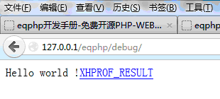
点击XHPROF_RESULT，
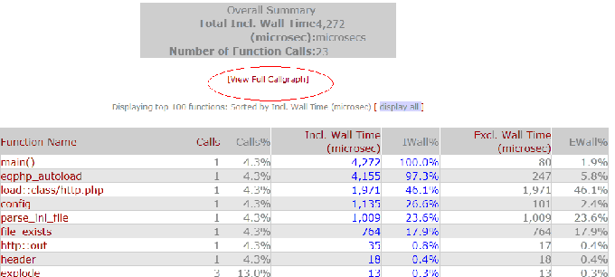
点击[View Full Callgraph]，
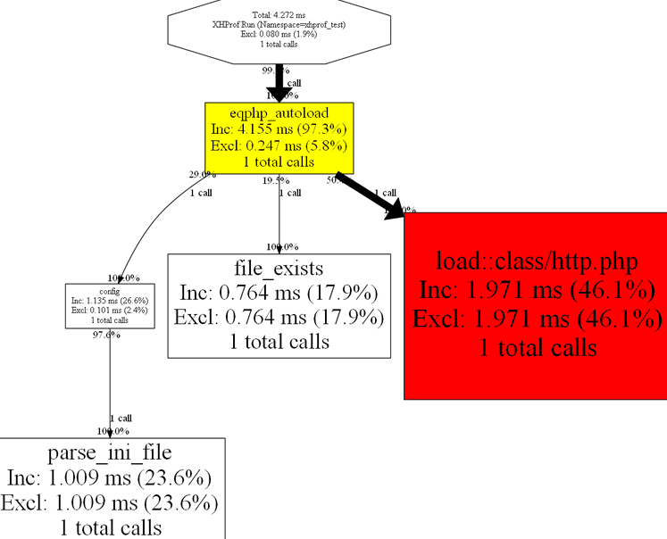
日志(log)
实际开发运营中，我们需要了解系统的运行状态、性能，以便我们及时作出处理决策，使系统继续保持良好的运行势态，这时记录日志和分析日志就显得相当重要。
EQPHP根据使用经验将日志分为异常日志（错误、警告等）和轨迹日志（SQL、访问记录等）。可使用写文件函数file::save()，也可在log类里自行定义封装。
1、异常、日志开启与关闭配置：log.ini
[exception]
mysql_connect=on
mysql_select=on
sql_error=on
mail=on
memcache=on
[log]
mysql_sql=on
mail=on
2、异常、错误记录方法：log::exception('异常分类(日志名)','记录内容')
log::exception('mysql',mysql_error()); //记录SQL语句执行错误
//自定义异常、错误方法：
log::memcache($host,$port); //memcache异常、错误
3、自定义日志记录方法
//记录SQL语句：log::sql($sql,$is_read)
log::sql("insert into test (name,info) values ('test','test ok!')",false);
//也可直接使用file::save('日志名','内容','记录模式')
$file=dc_log_test.'test.sql';
$info=date('Y-m-d H:i:s').'log test';
file::save($file,$info,'a+');